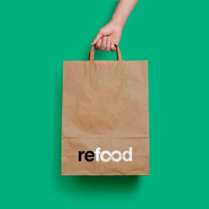

Resgatar alimentos, alimentar as pessoas e incluir toda a comunidade local, criando uma sociedade mais sustentável, justa e solidária.
Aproveitar para alimentar.
Este movimento concretiza a sua missão através de uma rede de voluntários que recolhem e distribuem bens a pessoas necessitadas e de uma rede de instituições doadoras de bens alimentares em boas condições.
Construímos uma ponte humana entre o excesso e a necessidade.

Voluntariar e ajudar.
Convidamos toda a comunidade local a fazer parte de um movimento 100% voluntário que transforma, não só desperdício em nutrição, mas também as vidas de todos os envolvidos numa verdadeira economia circular e solidária.
O Movimento REFOOD mobiliza os recursos da comunidade e seu sentido de responsabilidade social e ambiental para cocriar uma sociedade mais justa, solidária e sustentável.